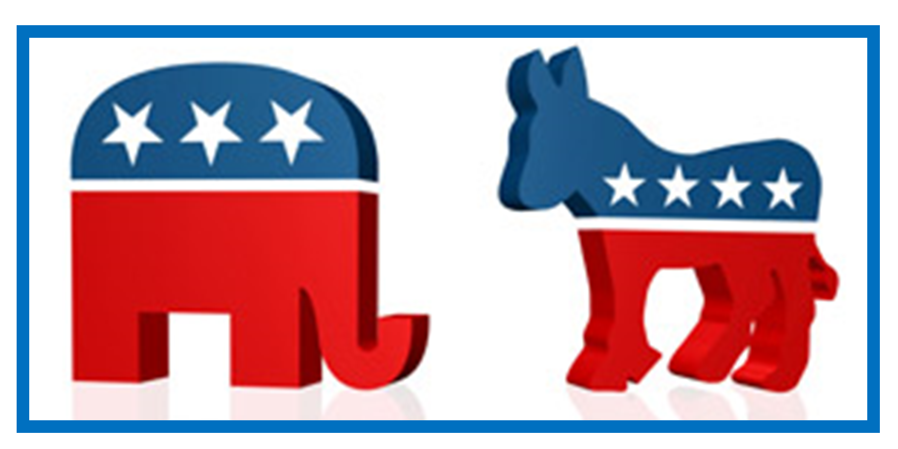
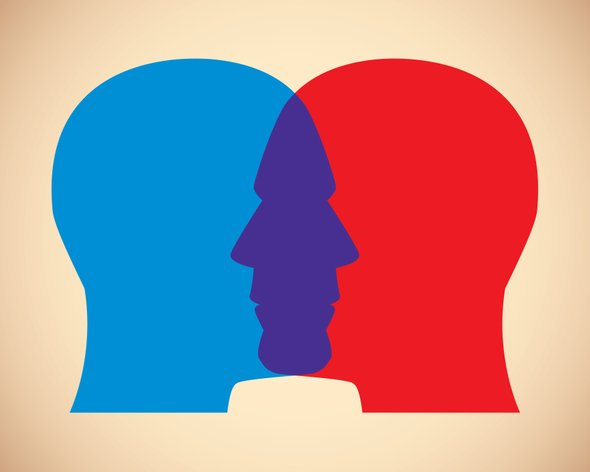

Since the 2016 American presidential election, it seems as though US national politics have become increasingly tribal,
with people aligning with candidates that reflect their outlook
rather than candidates that reflect specific policy views.
With that lens, we wanted to know if there are differences Democrat and Republican personalities? How big are these differences?
Are there personality traits that are "Republican" or "Democrat"? If so, what are these charatersitics? And finally,
can we predict your politics based on your personality traits?

Using the twitter api, we pulled 250,000 tweest from conngressmembers. We then used the LIWC api understand what their personatity was based on their twitter feeds. From there, we analyzed the personility traits of our nations leaders, understanding what is the overall personality of the congress and how democrats and republicans differ. Next, we used machine learning (Random Forests) to understand to what extent you can predict whether someone is democrat or republican based on their twitter feed
The personalities based on twitter may not be representative of a person's overall personality

Eric

Vikas

Ed
Sandra